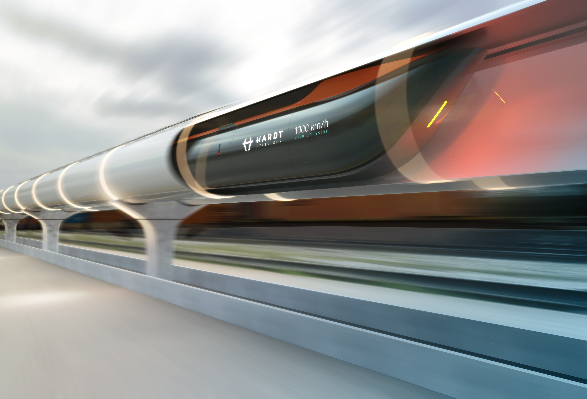

.png)
Hyperloop
Ik dacht vroeger altijd dat de snelste manier van vervoer door de lucht was. Misschien is dat ook wel zo, maar er is een concept onderweg wat ervoor zorgt dat grondtransport wel heel aantrekkelijk wordt. Op de technische universiteit in Delft is een team bezig met de zogenoemde ‘’Hyperloop’’. In 2013 schreef Elon Musk, CEO van Tesla en Space X, een verslag over de Hyperloop. Hij heeft het plan openbaar gemaakt en spoort andere mensen aan om mee te werken het te ontwikkelen. De Hyperloop is een concept dat gebruik maakt van onder druk gezette capsules die enorme snelheden kunnen halen. Snelheden tot wel 1080 km/h op het platteland en 480 km/h in de stad. Ter vergelijking, het meest voorkomende vliegtuig op Schiphol (een Airbus A320) haalt een snelheid van 967 km/h en de snelheid van het geluid is 1234,8 km/h. De capsules gaan door een vacuümbuis. Dit zorgt ervoor dat er bijna geen luchtweerstand is. In de vacuümbuis zitten magneten waardoor de capsules gaan zweven, dit zorgt voor een laag energieverbruik en hoge snelheden. De Hyperloop kan hierdoor op wind of zonne-energie werken, wat zorgt voor een stuk minder vervuiling. Door deze eigenschappen is het mogelijk om in 30 minuten van Amsterdam naar Parijs te komen. Op dit moment zijn er verschillende testen gedaan, het team van de TU Delft heeft een topsnelheid gehaald van 600km/h. De Hyperloop is dus duidelijk de meest efficiënte manier om grote afstanden af te leggen. Er zijn alleen veel verschillende technische uitdagingen bij betrokken, zoals het ontwerp van de capsules (ook wel Hyperloop-pod genoemd). Maar ook de buizen, de stations en de infrastructuur. Hierbij moet rekening worden gehouden dat dit allemaal in toekomstige scenario’s bedacht moet worden Eerste ideeën Het concept van de Hyperloop bestaat al een tijdje. Het eerste idee van een trein in een vacuüm buis kwam van de Russische professor Boris Weinberg in het begin van de 20ste eeuw. Helaas is er toen niks met het idee gedaan. Het concept heeft veel verschillende soorten namen en varities gekend: Airless Electric Way, Vactrain, Vaculec en Evacuated Tube Technology. Maar de Hyperloop is inmiddels wereldwijd de meest erkende naam geworden.Studenten van de TU Delft hebben in een TED talk hun ideeën over de Hyperloop laten zien. Volgens die ideeën is het voertuig 30 meter lang is en biedt het plaats aan tien tot vijftig passagiers. Tussen de voertuigen is dan een interval van ongeveer 30 seconden. Het voertuig heeft een aerodynamische vorm omdat er in de vacuümbuis sprake is van een “soft vacuüm”. Dat betekent dat er toch nog luchtdeeltjes in de buis zitten. Als er luchtdeeltjes in de buis zitten geeft dat luchtwrijving, wat ervoor zorgt dat het voertuig afremt. Door de aerodynamische vorm wordt dit verminderd en haal je het meeste uit het voertuig. Ook heeft het voertuig een symmetrisch ontwerp. Dit zorgt ervoor dat het voertuig twee verschillende kanten op kan. Hierdoor wordt er veel geld bespaard in verband met het ontwerpen van het station.
